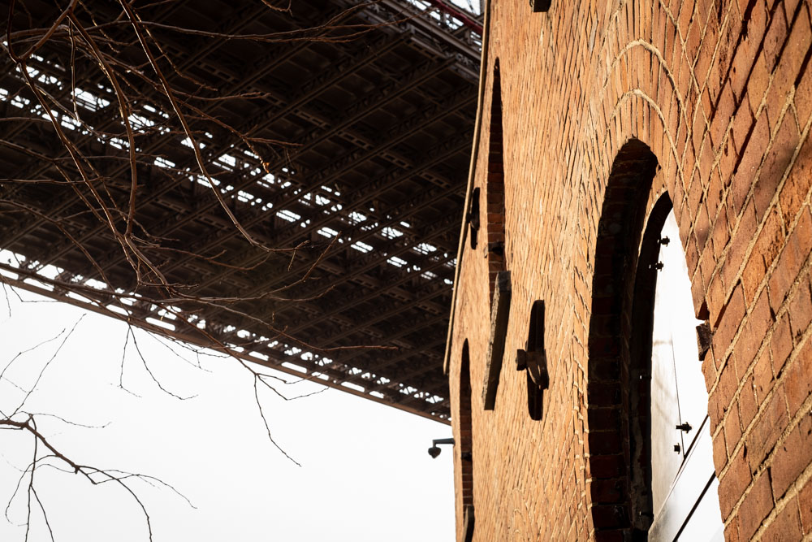
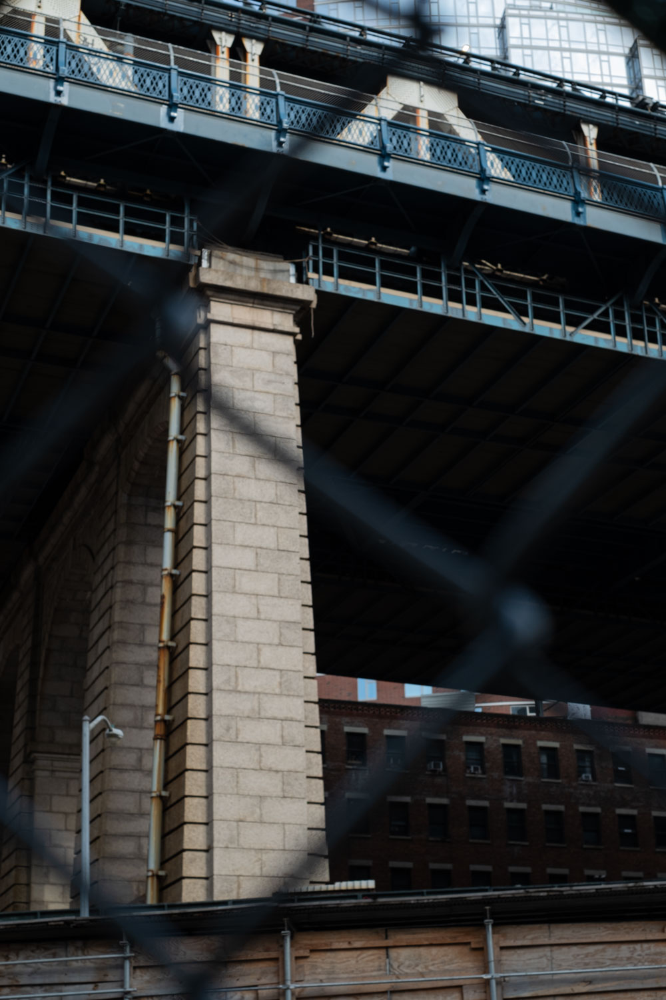

Residents living between the Brooklyn and Manhattan bridges agreed to rename their neighborhood in 1978 in order to reinforce the area's identity. The community members came up with the name “DUMBO”, which stands for Down Under the Manhattan Bridge Overpass as it used to be known as Gairville. Back to the 19th and early 20th century, this area was filled with industries and warehouse buildings. It was until the developer David Walentas who bought this area in the late 20th century, was able to reform the area into an upscale residential and commercial community. Nowadays, the DUMBO area is a hotspot of dining, entertainment, and shopping with the view of the lower Manhattan skyline.

